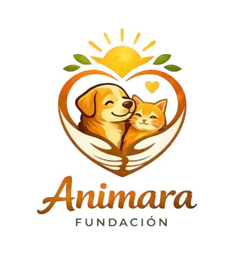
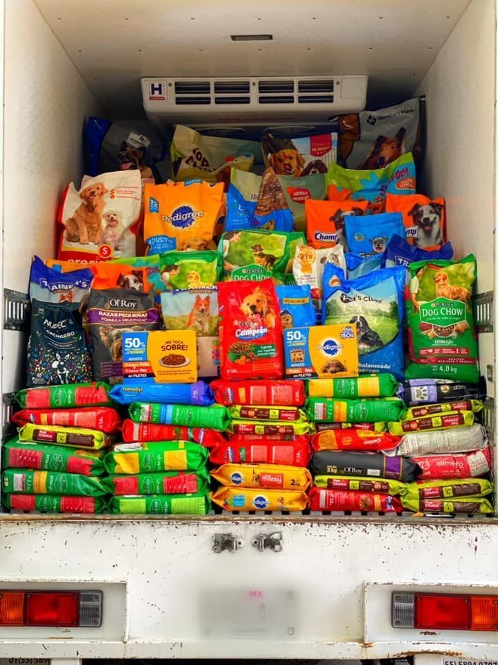
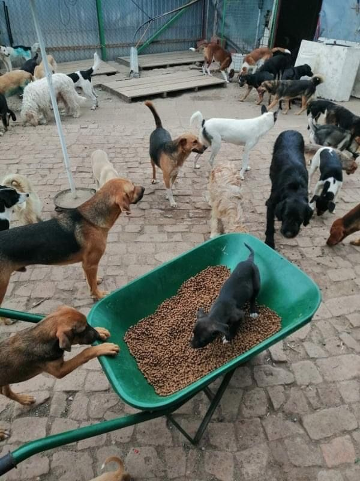

Un proceso simple, seguro y con seguimiento real para que tu apoyo siempre llegue a quien lo necesita.
Desde tu donativo hasta el animal que lo recibe
Completa tu nombre y correo electrónico para que podamos mantenerte informado sobre el impacto de tu apoyo. No necesitas crear una cuenta ni realizar un registro.
Al hacer clic en el botón Donar con PayPal, accederás a una plataforma segura donde podrás elegir el monto de tu donación, seleccionar si deseas que sea única, semanal o mensual, y definir la causa que deseas apoyar.
Finaliza tu donación a través de PayPal, una plataforma segura y confiable. Tu información financiera está protegida en todo momento y el proceso toma solo unos minutos.
Recibimos tu donativo y lo optimizamos comprando por volumen con proveedores aliados, logrando que cada peso tenga un mayor impacto. Posteriormente distribuimos alimentos, medicinas e insumos directamente a los refugios y rescatistas que más lo necesitan.
Eficiencia y transparencia en cada peso
Negociamos precios con proveedores para que cada donativo rinda más que una compra individual.
Los insumos llegan directamente a los refugios, sin intermediarios innecesarios que encarezcan el proceso.
Publicamos informes periódicos con el detalle de cómo se usaron los fondos recaudados.
Elige la forma de apoyo que mejor se adapte a ti.

La forma de apoyo con mayor impacto. Tu donación mensual permite planificar la ayuda a largo plazo y brindar estabilidad a los refugios y rescatistas aliados.
Donar
Con un aporte semanal ayudas a responder rápidamente a las necesidades más urgentes de los animales rescatados, garantizando alimento, medicinas e insumos de forma constante.
DonarRealiza una donación única y destínala a la causa que más te inspire: alimentación, atención veterinaria, medicamentos o mejoras para refugios. Un solo aporte puede marcar una gran diferencia.
DonarTodo lo que necesitas saber antes de donar